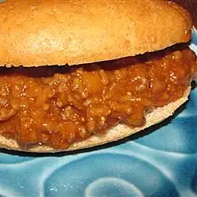

Sloppy Joe's

Description
A delcious and messy sandwich!
Ingredients
- 1½ pounds lean ground beef
- 1 yellow onion, chopped
- 1 red bell pepper, chopped
- sea salt and ground black pepper to taste
- 1½ cups ketchup
- 3 tablespoons apple cider vinegar
- 3 tablespoons Worcestershire sauce
- 3 tablespoons brown sugar
- 3 tablespoons yellow mustard
- 3 tablespoons hickory flavored barbecue sauce
- 2 tablespoons grated Parmesan cheese
- 5 large hamburger buns, toasted
- Cook the ground beef in a large skillet over medium heat until completely browned, 5 to 7 minutes. Add the onion and bell pepper, season with sea salt and black pepper, and cook until vegetables soften, about 7 minutes.
- Stir in the ketchup, vinegar, Worcestershire sauce, brown sugar, mustard, and barbeque sauce. Reduce heat to low and simmer the mixture until thickened, about 10 minutes. Add Parmesan cheese and serve on toasted hamburger buns.